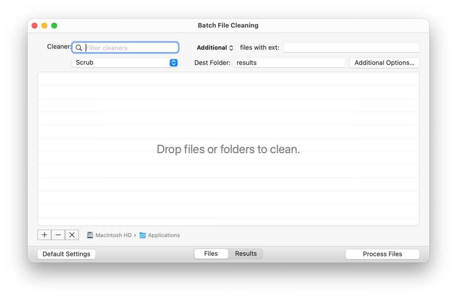
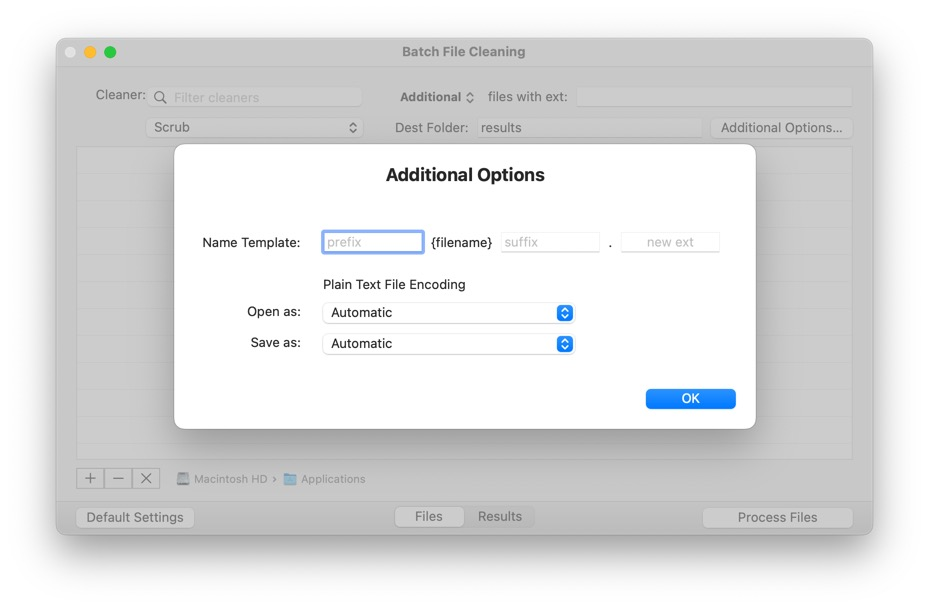

Batch File Cleaning

Batch file cleaning provides an interactive ability to clean files using the TextSoap application.
Filter
Use the filter to limit the cleaner popup to find your specific cleaner.
Cleaner
The cleaner you wish to apply to the files.
Additional / Only & Files with ext:
TextSoap typically processes .RTF and .TEXT documents. If you have a text file with a non-standard extension that isn’t being recognized, you can add the extension to the list (space separated).
The popup allows you to specify additional extensions, or to only allow the specified extensions.
Dest Folder
Specify the destination folder. By default, the name is “results” which will create a sub-folder in the given source location for processed files. If you wish to results to overwrite the files in the same folder, delete the default value and leave it empty.
Additional Options
These options all for less common options when using batch file cleaning. See below.
Files
The files area allows you to view the files to be processed. You can either drag the files directly into the table or select the + to add files. You can also remove selected files or clear out the entire list.
Results
The results area displays a log of the files processed.
Default Settings
This option will reset the batch file cleaning to its initial state, removing any changes made to the settings.
Process Files
This action will begin processing the files, applying the specified cleaner to the list of files dropped into the list.
Additional Options:

Name Template
You can specify any additional prefix, suffix, or new extension for the cleaned file.
Plain Text File Encoding
You can optionally use the specified encoding for opening and saving files. When set to Automatic, it will try to use the best guess the system and determine from the file’s type, falling back to UTF–8 if it cannot match anything else.